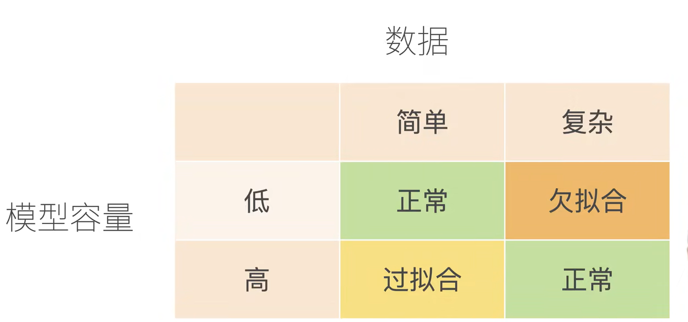

训练误差指的是模型在训练数据集上计算得到的误差。泛化误差是指，模型应用在同样从原始样本的分布抽取的无线多数据样本时，模型误差的期望。
在实际中我们只能通过将模型应用在一个独立的测试集来估计泛化误差，该测试集由随机选取的、未曾在训练集中出现的数据样本构成。

当我们有简单的模型和大量的数据时，我们期望泛化误差和训练误差想接近。当我们有更复杂的模型和更少的样本时，我们预计训练误差会下降，但是泛化误差会增大。
一个模型能否很好地泛化取决于很多因素。例如，具有更多参数的模型可能被认为更加复杂，参数有更大取值范围的模型可能更为复杂。通常对于神经网络，我们认为需要更多训练迭代的模型比较复杂，而需要早停的模型（也就是较少训练迭代周期）就不那么复杂。
关于模型容量：
影响模型泛化的因素：
在机器学习中，我们通常在评估几个候选模型之后选择最终的模型。这个过程叫做模型选择。有时候需要进行比较的模型在本质上是完全不同的（决策树与线性模型）。或者我们需要比较不同的超参数设置下的同一类模型。